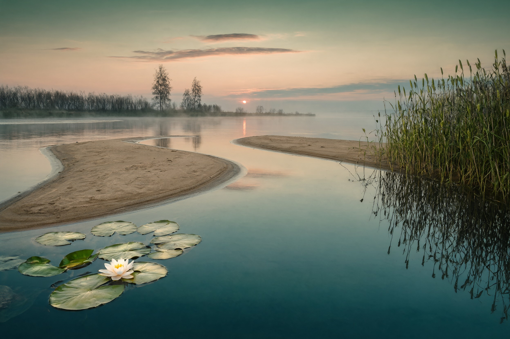
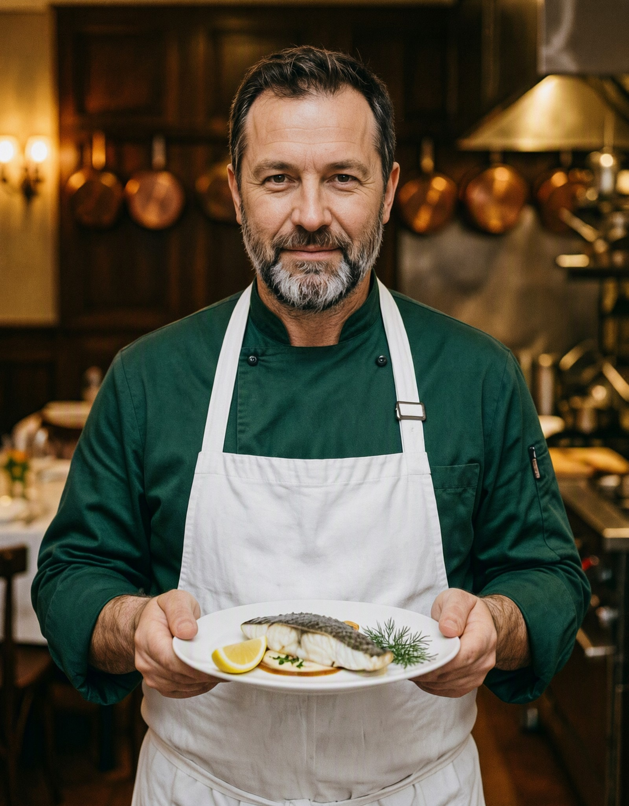
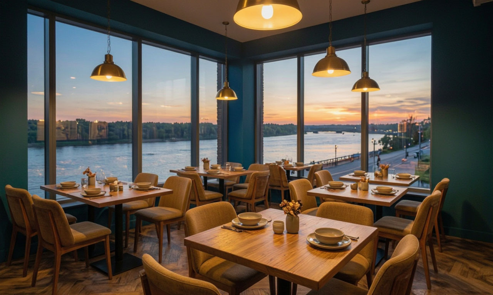
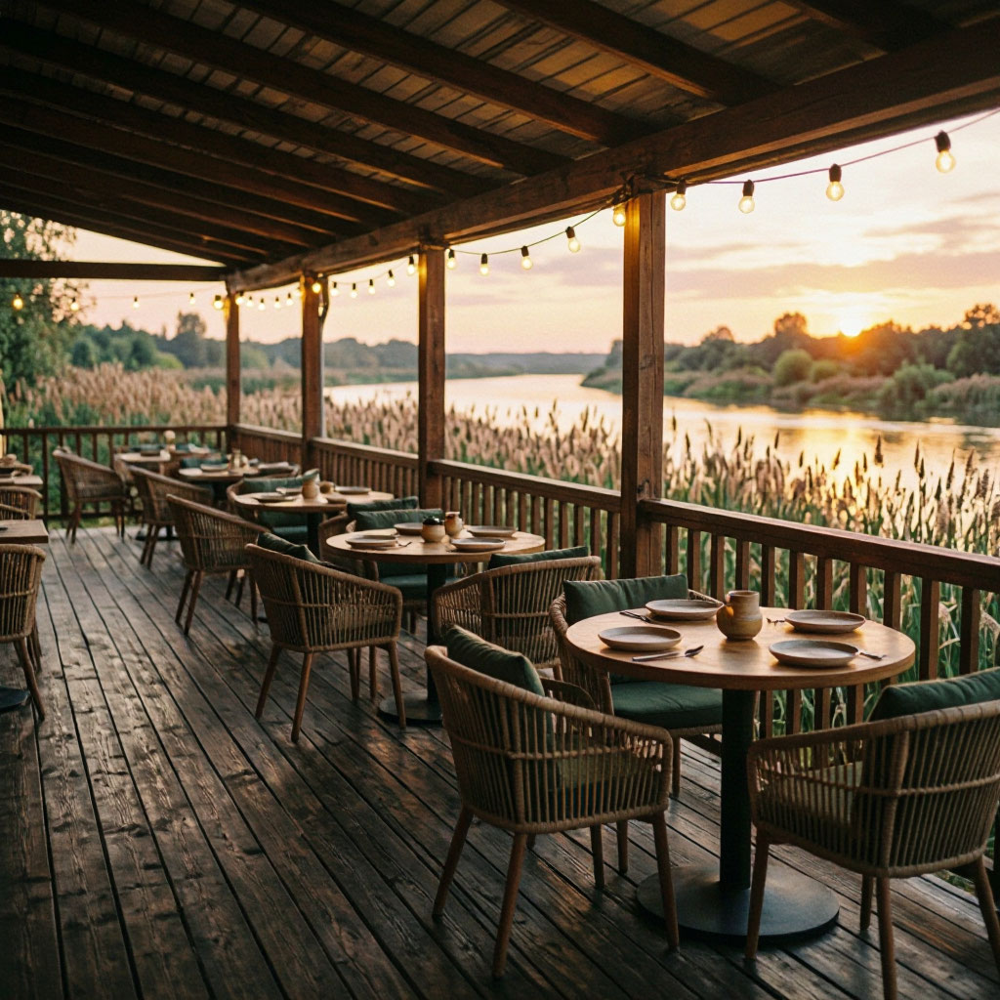
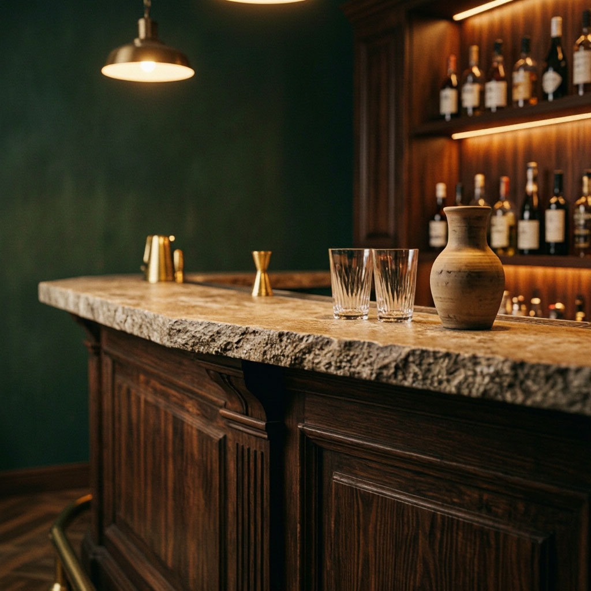
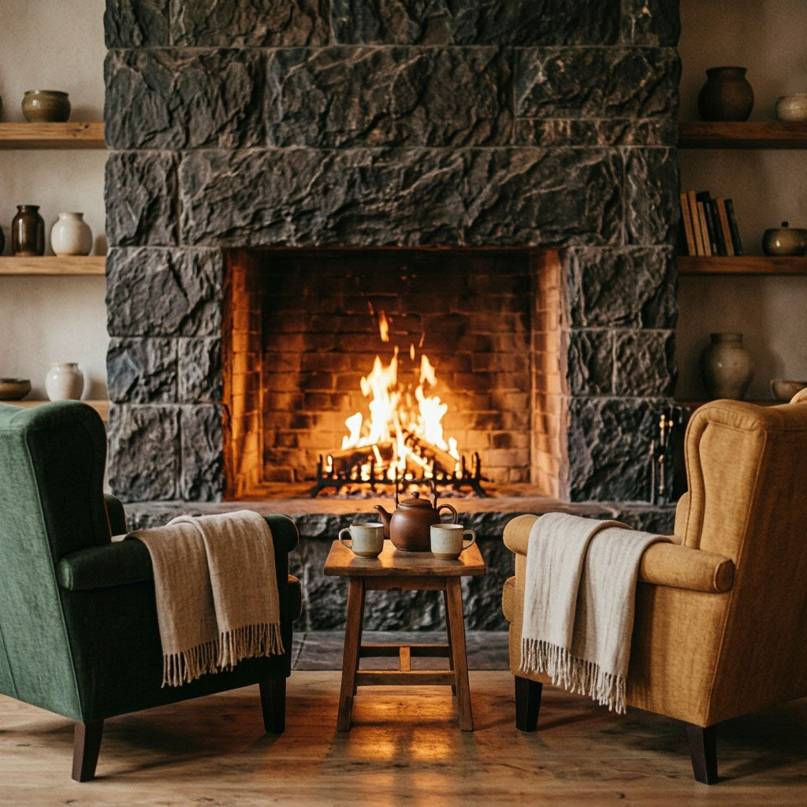
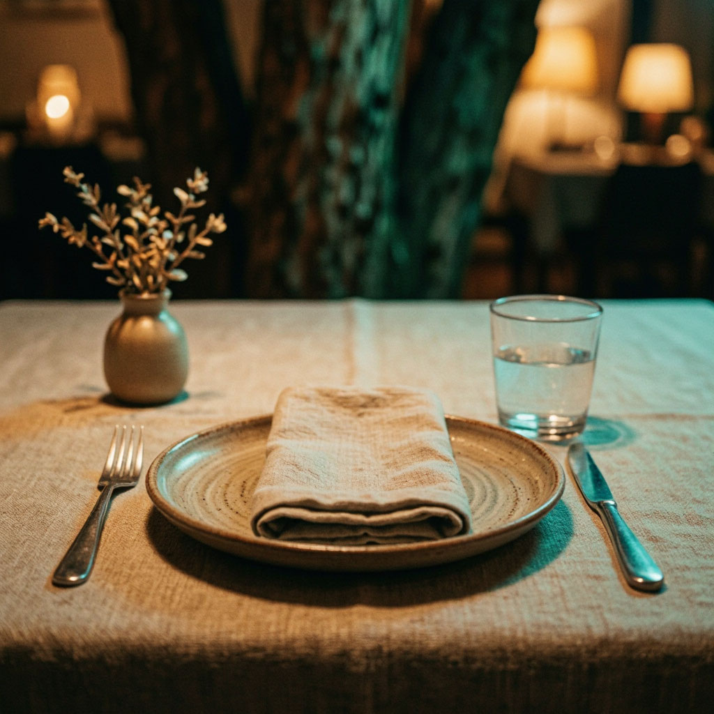
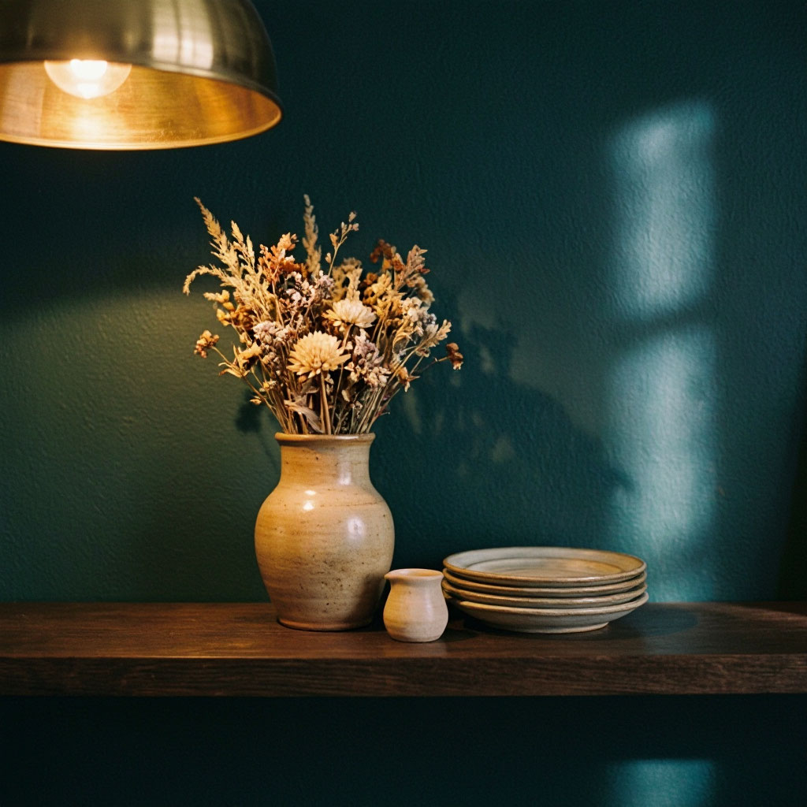

«Дельта» открылась в 2018 году как семейный ресторан волжской кухни. Название — в честь дельты Волги, главного источника нашего меню: судак, стерлядь, лещ, раки и местные овощи.
Концепция — «региональная кухня без пафоса»: знакомые вкусы в аккуратной современной подаче. Зимой — каминная зона, летом — терраса с видом на воду.

Работал в ресторанах Астрахани и Волгограда, двенадцать лет изучает волжскую рыбную кухню. Отвечает за меню и собственный коптильный цех.
«Дельта Волги кормит нас каждый день. Моя задача — не испортить то, что река уже сделала хорошо».





